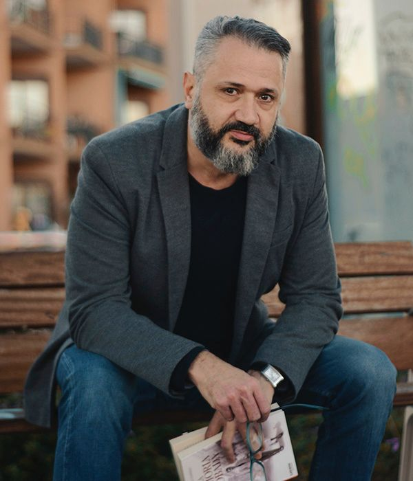

<!DOCTYPE html>
<html lang="en">

<head>
    <meta charset="UTF-8">
    <meta name="viewport" content="width=device-width, initial-scale=1.0">
    <!-- Stylesheet -->
    <link href="css/vendor/bootstrap.min.css" rel="stylesheet">
    <link rel="stylesheet" href="css/vendor/fontawesome.css">
    <link rel="stylesheet" href="css/vendor/brands.css">
    <link rel="stylesheet" href="css/vendor/regular.css">
    <link rel="stylesheet" href="css/vendor/solid.css">
    <link rel="stylesheet" href="css/vendor/swiper-bundle.min.css">
    <link rel="stylesheet" href="css/style.css">
    <link rel="icon" type="image/png" href="image/favicon_io/favicon-32x32.png">
<link rel="preconnect" href="https://fonts.googleapis.com">
<link rel="preconnect" href="https://fonts.gstatic.com" crossorigin>
<link href="https://fonts.googleapis.com/css2?family=Montserrat:ital,wght@0,100..900;1,100..900&display=swap" rel="stylesheet"><style>
@import url('https://fonts.googleapis.com/css2?family=Montserrat:ital,wght@0,100..900;1,100..900&display=swap');

</style>
    <title>Andrés Rodríguez Domingo - Bio</title>
</head>

<body>
    <!-- Scripts -->
    <script src="js/vendor/bootstrap.bundle.min.js"></script>
    <script src="js/vendor/jquery.min.js"></script>
    <script src="js/vendor/swiper-bundle.min.js"></script>
    <script src="js/script.js"></script>
    <script src="js/swiper-script.js"></script>
    <script src="js/submit-form.js"></script>
    <script src="js/vendor/isotope.pkgd.min.js"></script>
    <script src="js/video_embedded.js"></script>

    <!-- HEADER -->
    <section id="header" class="fixed-top py-lg-1 py-3">
        <div class="r-container">
            <nav class="navbar navbar-expand-lg">
                <div class="container-fluid">
                    <div class="logo-container">
                        
                    </div>
                    <button class="navbar-toggler accent-color" type="button" data-bs-toggle="collapse"
                        data-bs-target="#navbarSupportedContent" aria-controls="navbarSupportedContent"
                        aria-expanded="false" aria-label="Toggle navigation">
                        <i class="fa-solid fa-bars-staggered"></i>
                    </button>
                    <div class="collapse navbar-collapse" id="navbarSupportedContent">
                        <ul class="navbar-nav ms-auto mb-2 mb-lg-0 gap-lg-3 p-lg-0 p-4 gap-2">
                            <li class="nav-item">
                                <a class="nav-link" aria-current="page" href="index.html">Inicio</a>
                            </li>
                            <li class="nav-item">
                                <a class="nav-link  active" aria-current="page" href="about.html">Bio</a>
                            </li>
                            <li class="nav-item">
                                <a class="nav-link" aria-current="page" href="books.html">Libros</a>
                            </li>

                              <li class="nav-item">
                                <a class="nav-link" aria-current="page" href="blog_post.html">Actividades</a>
                            </li>
                         
                            <li class="nav-item">
                                <a class="nav-link" aria-current="page" href="contact.html">Contacto</a>
                            </li>

                        </ul>
                    </div>
                </div>
            </nav>
        </div>
    </section>

    <!-- MAIN PAGE -->
    <main>
        <!-- BANNER -->
<section class="section position-relative">

    <!-- Imagen para desktop -->
    

    <!-- Imagen para móvil -->
    

    <!-- Overlay -->
    <div class="position-absolute top-0 start-0 w-100 h-100"
         style="background: rgba(0,0,0,0.45); z-index: 1;"></div>

    <!-- Contenido -->
    <div class="r-container text-white position-relative py-5" style="z-index: 2;">
        <div class="d-flex flex-column justify-content-center align-items-center text-center">
            <h5 class="accent-color fw-normal font-2 fs-4">Acerca de mí</h5>
            <h1 class="font-1 fw-bold">Biografía</h1>
        </div>
    </div>
</section>


        <section class="section bg-white">
            <div class="r-container">
                <div class="row row-cols-1 row-cols-lg-2">
                    <div class="col">
                        
                    </div>
                    <div class="col">
                        <div class="d-flex flex-column gap-3 h-100 justify-content-center">
                            <h5 class="accent-color fw-normal font-2 fs-4">¿Qué hago?</h5>
                            <h3 class="font-1 fw-bold">Vivir, contar y compartir</h3>
                           <!--  <div class="divider accent-color me-lg-auto">
                                <i class="fa-solid fa-square-full"></i>
                            </div> -->
                            <p>
                               Soy escritor, diseñador y alumno de <em>Integración Social</em> y creo profundamente en el poder de la palabra para transformar —aunque sea un poco— la forma en que miramos el mundo. Intento vivir con curiosidad, humor y una mirada que busca comprender antes que juzgar. Escribo porque descubrí que las palabras pueden reparar silencios, rescatar memorias y alumbrar aquello que a veces cuesta mirar. Además de escribir disfruto del encuentro directo con las personas. Por eso me gusta crear espacios compartidos y conversaciones abiertas donde la literatura deja de ser algo solitario y se convierte en un puente entre miradas. Mi interés por comprender a los demás y por mejorar mi propia forma de relacionarme me ha llevado también a estudiar un Grado Superior en Integración Social, un camino que estoy recorriendo para ampliar mis habilidades sociales y humanas para poder ofrecer un acompañamiento más consciente y respetuoso.


                            </p>
                            
                            
                            <p>
                                Y ahora que ya sabes algo de mí: ¿Hacemos algo juntos? ¿Un café?

                                <div class="mt-3">
                                <a href="contact.html" class="link font-1 fw-semibold fs-5">Hablemos &ensp;<i
                                        class="fa-solid fa-arrow-right-long"></i></a>
                            </div>
                        </div>
                    </div>
                </div>
            </div>
        </section>
     <section class="section">
            <div class="r-container text-white">
                <div class="d-flex flex-column gap-3 text-center">
       
                    <div class="overflow-hidden mt-4 text-start">
                        <div class="swiper-testimonials">
                            <!-- Additional required wrapper -->
                            <div class="swiper-wrapper">
                                <!-- Slides -->
                                <div class="swiper-slide">
                                    <div class="d-flex flex-column gap-3">
                                      
                                        <p>
                                            "Andrés es un autor que escribe de forma magnífica domina la fluidez de la prosa y además posee una cualidad admirable: un humor literario bien fundamentado construido sobre hechos y sentencias que te hacen tomar conciencia de lo relativo que es todo en la vida. Se mueve con comodidad entre registros muy distintos contando historias tan variadas como singulares.
Se nota que trabaja cada historia con dedicación dejando que las ideas maduren y que las tramas encuentren su curso natural."
                                        </p>
                                        <div class="d-flex flex-row gap-3 align-items-center">
                                            
                                            <div class="d-flex flex-column">
                                                <h5 class="m-0 font-1 fw-bold">Francisco Pérez
</h5>
                                                <span>

Product Manager en el sector químico.
Escritor.</span>
                                            </div>
                                        </div>
                                    </div>
                                </div>
                                <div class="swiper-slide">
                                    <div class="d-flex flex-column gap-3">
                                        <p>
                                            "Es un escritor que empezó a escribir impulsado por una etapa de ansiedad que lo llevó a explorar cómo esta afectaba su vida. Ese proceso lo condujo a descubrir el poder sanador de expresar las emociones a través de la palabra. Sus libros son conmovedores muy bien documentados y escritos con una narrativa fluida que te atrapa desde el inicio. Escribe para sanar para comprender para dar voz a quienes no la tienen y para compartir su experiencia vital con quienes puedan sentirse identificados."
                                        </p>
                                        <div class="d-flex flex-row gap-3 align-items-center">
                                            
                                            <div class="d-flex flex-column">
                                                <h5 class="m-0 font-1 fw-bold">Esther Galindo
</h5>
                                                <span>Psicóloga clínica.

</span>
                                            </div>
                                        </div>
                                    </div>
                                </div>

<div class="swiper-slide">
                                    <div class="d-flex flex-column gap-3">
                                        <p>
                                            "Andrés destaca como una voz literaria en constante evolución. Obra tras obra muestra mayor valentía y una expresión personal cada vez más definida. Es un escritor versátil capaz de adaptarse a registros muy diversos sin perder nunca la sensibilidad ni la autenticidad que lo caracterizan.
Con una prosa cuidada y precisa logra conmover hacer reflexionar y a veces incluso arrancar una sonrisa. En definitiva es un creador que sin hacer ruido construye una obra que deja huella y que se recuerda mucho después de haber cerrado el libro."
                                        </p>
                                        <div class="d-flex flex-row gap-3 align-items-center">
                                            
                                            <div class="d-flex flex-column">
                                                <h5 class="m-0 font-1 fw-bold">Montse Verdú
</h5>
                                                <span>Profesora de educación secundaria y Bióloga Molecular. Instructora de Mindfulness.

</span>
                                            </div>
                                        </div>
                                    </div>
                                </div>


                                <div class="swiper-slide">
                                    <div class="d-flex flex-column gap-3">
                                        <p>
                                            "Posee una libertad creativa desbordante. Sus historias me llegan tan hondo que a veces solo soy capaz de terminar sus novelas menos comprometidas cuando lo leo escucho su voz de narrador con tanta claridad que a mi mente le cuesta aceptar que todo es ficción. Esa intensidad emocional unida a una mirada profundamente humana hace que cada nueva obra suya sea todavía mejor que la anterior. Su estilo evoluciona crece y se afina con cada publicación."
                                        </p>
                                        <div class="d-flex flex-row gap-3 align-items-center">
                                            
                                            <div class="d-flex flex-column">
                                                <h5 class="m-0 font-1 fw-bold">Oriol Planells
</h5>
                                                <span>Diseñador gráfico.
Artista y Músico.


</span>
                                            </div>
                                        </div>
                                    </div>
                                </div>


                    
                            </div>
                        </div>
                    </div>
                </div>
            </div>
        </section>
        

    </main>

    <!-- FOOTER -->
    <footer>
        <section class="section position-relative text-white">

            <div class="r-container position-relative" style="z-index: 2;">
                <div class="d-flex flex-column gap-4 align-items-center justify-content-center text-center">
                    <h5 class="accent-color fw-normal lh-1 font-2 fs-4 m-0">Mis redes</h5>
                    <div class="social-container">
                        <a type="button" href="https://www.facebook.com" class="social-item">
                            <i class="fa-brands fa-facebook"></i>
                        </a>
                        <a type="button" href="https://www.twitter.com" class="social-item">
                            <i class="fa-brands fa-twitter"></i>
                        </a>
                        <a type="button" href="https://www.instagram.com" class="social-item">
                            <i class="fa-brands fa-instagram"></i>
                        </a>
                        <a type="button" href="https://www.instagram.com" class="social-item">
                            <i class="fa-brands fa-linkedin"></i>
                        </a>
                    </div>
                </div>
            </div>
        </section>
        <section class="py-4 text-gray">
            <div class="r-container text-center">
                
            </div>
        </section>
    </footer>

    <script src="js/vendor/fslightbox.js"></script>
    <script src="js/masonry.js"></script>
</body>

</html>